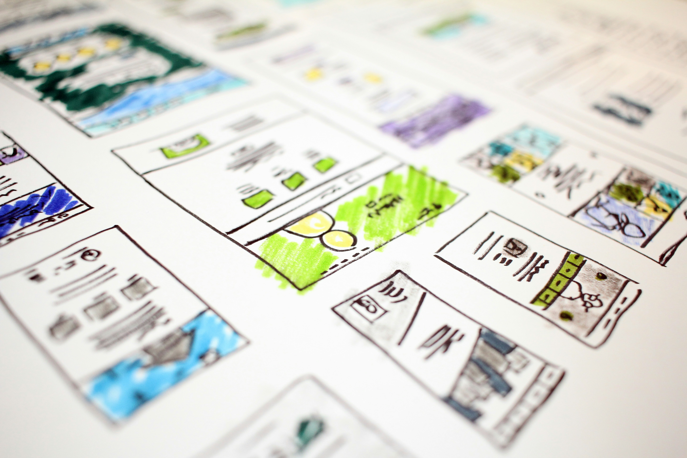
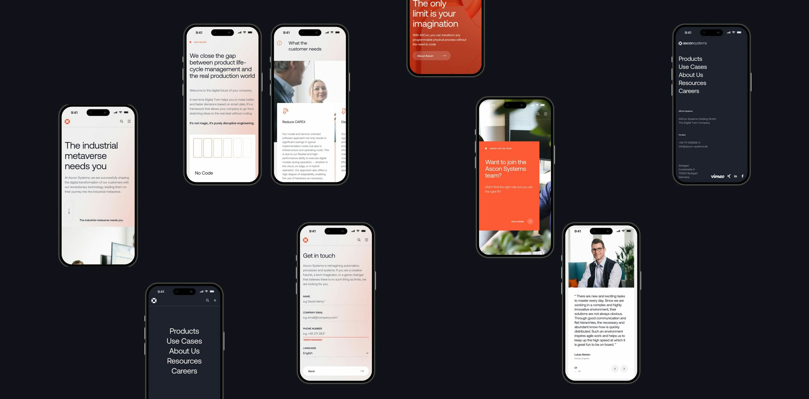
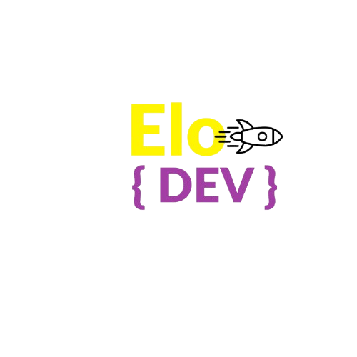
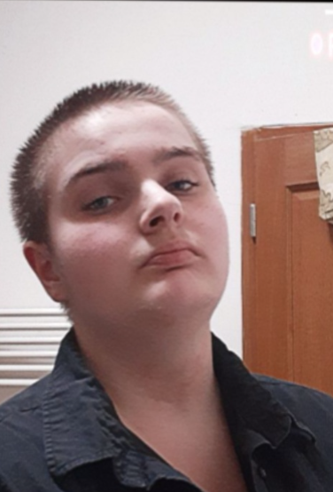
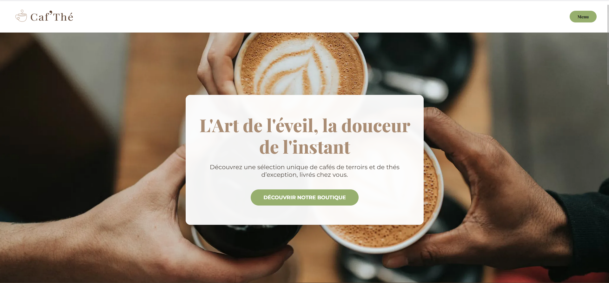
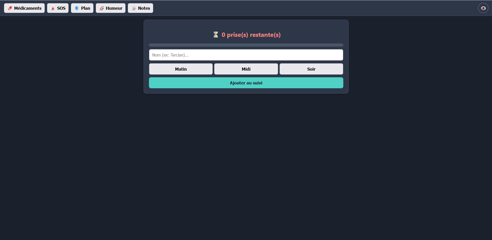
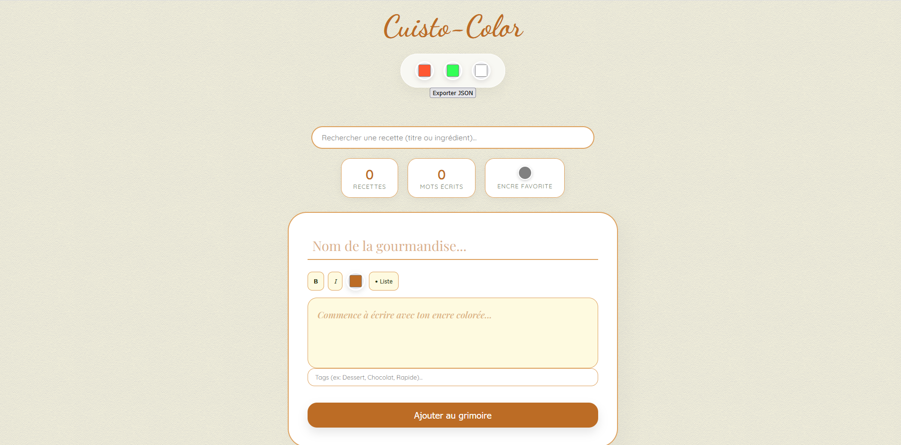

Mes services

Développement Mobile
& Responsive

Eco-conception &
Optimisation

Maintenance & Suivi


Bonjour, moi c'est Eloise Robert, je suis développeuse web
depuis maintenant 2 ans. Je construit des sites web adaptés
au format mobile, conçus de façon éco-responsable.
Un code optimisé, un design fluide et une empreinte carbone
réduite pour votre futur site internet.
J'accompagne les entreprises et les créateurs dans le
développement de leur présence en ligne avec des solutions
sur mesure, durables et centrées sur l'expérience utilisateur.
De la conception à la mise en ligne, je traduis vos idées en lignes
de code propres pour créer des plateformes épurées et
respectueuse de l'environnement.
On commence quand ?
Développement Mobile
& Responsive

Eco-conception &
Optimisation

Maintenance & Suivi

Site réalisé dans le cadre de ma formation à la Fabrique Numérique.
Caf'Thé est un site e-commerce haut de gamme de vente de thé et de café.

Application web d'accompagnement médical permettant le suivi rigoureux des
traitements et des prescriptions, avec sauvegarde locale sécurisée.

Carnet de recette numérique personnalisé avec un outil de customisation de
couleurs et un module d'exportation de fiches recettes au format PDF.